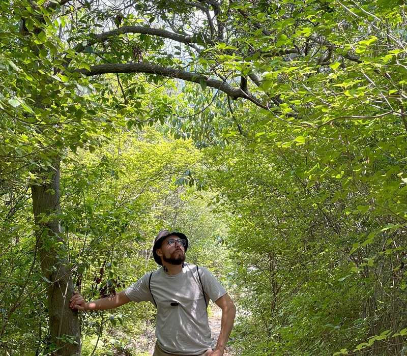
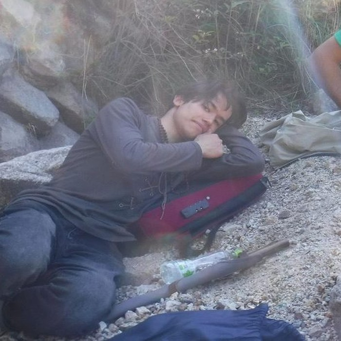

Who Do You Want Today?
Three guides, three styles, four languages between them. One is a mountain specialist, one unlocks local Japan through Japanese, and one bridges the Arabic and Spanish-speaking world into Kansai. Pick yours.

Born in Spain, based in Osaka for over a decade. Tony has summited every major peak in Kansai and knows Osaka's food streets like his own kitchen. The only guide in the team who speaks Arabic — which opens doors across the Middle East and North Africa travelling community. Mountains, markets or hidden temples: Tony builds the day around you.
A European wanderer who made Kyoto home. Johnny has climbed the same peaks as Tony and brings the eye of an architect to both mountains and cities — the silent pass nobody uses, the ceramics workshop in the alley behind the famous shrine, the covered market that feels like 1960s Japan. The only guide here who speaks Czech and takes Czech and Slovak guests through Kansai with full cultural context.

Larion speaks Japanese natively — which is a different world from speaking it conversationally. He talks to shop owners, temple priests, izakaya masters and market vendors the way a local does. That access unlocks places and conversations no other guide can reach. His expertise is in the cultural routes: shotengai arcades, covered markets, rustic ryokan towns, old-town neighborhoods and the kind of evening in a standing bar where you forget you're a tourist.
All prices per group (not per person) · Maximum 6 guests per booking · Transport and entry fees are additional